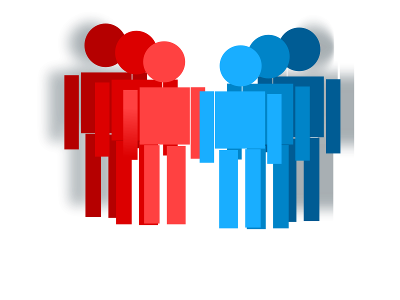

Welcome to the Clubs page!
To the left are links to navigate towards a specific club. From there you will be able to learn who and what these clubs contain along with events occurring.
Below is a list of each club based off of targeted degree:
| Club | Degree | Is Active |
|---|---|---|
| ACJA | Criminal Justice Degree | Yes |
| PBL | Business Degree | No |
| Cinema | All Degrees | No |
| Student Senate | All Degrees | Yes |
| DSA | Unknown | No |
| NSCS | All Degrees | Yes |
| RPI | IT, CS, CSS | No |
| SFN | All Degrees | No |